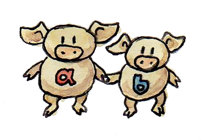

我们已经看到组合类型的两种基本方式：积与余积。事实证明，日常编程里的许多数据结构，仅用这两种机制便能构造。这一点有重要的实践意义：数据结构的许多性质都可以组合。例如，若你知道怎样判断基础类型的值是否相等，也知道怎样把这种比较推广到积类型与余积类型，就可以自动为复合类型推导相等运算符。在 Haskell 中，对于很大一类复合类型，你可以自动推导相等、比较、与字符串互相转换等能力。
下面仔细看看积类型与和类型在编程中的样子。
积类型
编程语言中两种类型之积的标准实现是 pair。在 Haskell 中，pair 是原始类型构造器；在 C++ 中，它是标准库定义的一个相对复杂的模板。

pair 并非严格可交换：(Int, Bool) 不能替代 (Bool, Int)，尽管二者携带相同的信息。不过，它们在同构意义下可交换；同构由 swap 函数给出，而它自身就是自己的逆：
swap :: (a, b) -> (b, a)
swap (x, y) = (y, x)可以把这两种 pair 理解为用不同格式存储同一份数据，就像大端序与小端序。
把 pair 嵌套在 pair 里，便能把任意多个类型组合成积；但还有更简单的办法：嵌套 pair 等价于元组。这是因为 pair 的不同嵌套方式彼此同构。若要按顺序把三个类型 a、b、c 组合成积，可以有两种写法：
((a, b), c)或者：
(a, (b, c))这两个类型不同——不能把其中一个传给期待另一个的函数——但它们的元素一一对应。下面的函数把前者映射成后者：
alpha :: ((a, b), c) -> (a, (b, c))
alpha ((x, y), z) = (x, (y, z))而且这个函数可逆：
alpha_inv :: (a, (b, c)) -> ((a, b), c)
alpha_inv (x, (y, z)) = ((x, y), z)所以它是同构。这只是重新包装同一份数据的不同方式。
可以把构造积类型理解为类型上的二元运算。从这个角度看，上述同构很像我们在幺半群中见过的结合律：
不同在于：对幺半群而言，两种乘积组合方式相等；这里却只“在同构意义下”相等。
只要能够接受同构而不坚持严格相等，还能更进一步：单位类型 () 是积的单位元，就像 1 是乘法的单位元。某类型 a 的值与一个单位值配成 pair，并未增加任何信息。类型：
(a, ())与 a 同构。下面就是这个同构：
rho :: (a, ()) -> a
rho (x, ()) = xrho_inv :: a -> (a, ())
rho_inv x = (x, ())这些观察可以形式化为：Set（集合范畴）是一个幺半范畴。它是一个同时具有幺半群结构的范畴，也就是说，可以“相乘”其中的对象——这里就是取笛卡尔积。以后我会进一步讨论幺半范畴，并给出完整定义。
Haskell 中还有一种更一般的积类型定义方式；尤其在很快要看到的、积类型与和类型结合的场景中很有用。它使用带多个参数的具名构造器。例如，pair 也可以定义成：
data Pair a b = P a b这里，Pair a b 是由另外两个类型 a 与 b 参数化的类型名，P 是数据构造器名。把两个类型传给类型构造器 Pair，就定义出一种 pair 类型；把两个相应类型的值传给构造器 P，就构造出一个 pair 值。例如，把值 stmt 定义为 String 与 Bool 的 pair：
stmt :: Pair String Bool
stmt = P "This statement is" False第一行是类型签名。它使用类型构造器 Pair，以 String 与 Bool 替换 Pair 通用定义中的 a 与 b。第二行把具体字符串与具体布尔值传给数据构造器 P，定义实际的值。类型构造器构造类型；数据构造器构造值。
Haskell 中类型构造器与数据构造器的名字位于不同命名空间，因此经常会看到两者使用同一个名字：
data Pair a b = Pair a b若眯起眼睛看，甚至可以把内建 pair 类型视为这种声明的变体，只是把名字 Pair 换成了二元运算符 (,)。事实上，可以像使用其他具名构造器一样使用 (,)，以其前缀形式构造 pair：
stmt = (,) "This statement is" False类似地，可以用 (,,) 构造三元组，依此类推。
除了使用通用 pair 或元组，也可以定义特定的具名积类型：
data Stmt = Stmt String Bool它只是 String 与 Bool 的积，但拥有自己的名称和构造器。这种声明风格的优点在于：你可以定义多种内容相同但意义与功能不同、因而不能彼此替换的类型。
用元组和多参数构造器编程可能变得凌乱且容易出错，因为必须持续记住每个分量代表什么。通常最好给分量命名。带有具名字段的积类型，在 Haskell 中称为记录，在 C 中称为 struct。
记录
来看一个简单例子。我们想描述化学元素，把两个字符串——名称与符号——和一个整数——原子序数——组合成一种数据结构。可以使用元组 (String, String, Int)，然后记住每个分量的含义。提取分量时则使用模式匹配，例如下面的函数检查元素符号是否为元素名称的前缀（例如 He 是 Helium 的前缀）：
startsWithSymbol :: (String, String, Int) -> Bool
startsWithSymbol (name, symbol, _) = isPrefixOf symbol name这段代码容易出错，也难以阅读和维护。定义记录要好得多：
data Element = Element { name :: String
, symbol :: String
, atomicNumber :: Int }以下两个互逆的转换函数证明了两种表示同构：
tupleToElem :: (String, String, Int) -> Element
tupleToElem (n, s, a) = Element { name = n
, symbol = s
, atomicNumber = a }elemToTuple :: Element -> (String, String, Int)
elemToTuple e = (name e, symbol e, atomicNumber e)注意，记录字段名同时也是访问这些字段的函数。例如，atomicNumber e 从 e 中取得 atomicNumber 字段。这里的 atomicNumber 是以下类型的函数：
atomicNumber :: Element -> Int采用 Element 的记录语法后，startsWithSymbol 函数更容易读懂：
startsWithSymbol :: Element -> Bool
startsWithSymbol e = isPrefixOf (symbol e) (name e)还可以利用 Haskell 的技巧：用反引号包围函数 isPrefixOf，把它变成中缀运算符，使代码读起来几乎像一句话：
startsWithSymbol e = symbol e `isPrefixOf` name e这里可以省略括号，因为中缀运算符的优先级低于函数调用。
和类型
正如集合范畴中的积导出积类型，余积也导出和类型。Haskell 中和类型的标准实现是：
data Either a b = Left a | Right b与 pair 一样，Either 在同构意义下可交换，可以嵌套，而且嵌套顺序在同构意义下无关紧要。例如，可以定义一个相当于三元组之和的类型：
data OneOfThree a b c = Sinistral a | Medial b | Dextral c依此类推。
事实证明，Set 对于余积也是一个（对称）幺半范畴。二元运算由不交并承担，单位元由始对象承担。用类型来说，Either 是幺半运算符，空类型 Void 是中性元素。可以把 Either 看成加号，把 Void 看成零。的确，给和类型加上 Void 不会改变它的内容。例如：
Either a Void与 a 同构，因为根本无法构造这种类型的 Right 版本——不存在 Void 类型的值。Either a Void 的所有居民都由 Left 构造器产生，只是封装了类型 a 的值。因此，用符号表示就是 a + 0 = a。
和类型在 Haskell 中相当常见；对应的 C++ 联合或变体却少见得多，原因有几个。
首先，最简单的和类型只是枚举，在 C++ 中用 enum 实现。Haskell 和类型：
data Color = Red | Green | Blue对应的 C++ 是：
enum { Red, Green, Blue };更简单的和类型：
data Bool = True | False就是 C++ 的原始类型 bool。
表示值存在或缺失的简单和类型，在 C++ 中往往借助特殊技巧和“不可能”的值实现，例如空字符串、负数、空指针等。若这种可选性是有意为之，在 Haskell 中则用 Maybe 类型表达：
data Maybe a = Nothing | Just aMaybe 是两种类型之和。把两个构造器拆成各自独立的类型，就能看清这一点。第一部分会是：
data NothingType = Nothing这是只有一个值 Nothing 的枚举。换言之，它是单元素集合，等价于单位类型 ()。第二部分：
data JustType a = Just a只是对类型 a 的封装。我们本可以把 Maybe 编码为：
type Maybe a = Either () a更复杂的和类型在 C++ 中经常用指针模拟。指针要么为空，要么指向某个具体类型的值。例如，Haskell 的列表可定义成一种递归和类型：
data List a = Nil | Cons a (List a)它可以翻译成 C++，用空指针技巧实现空列表：
template<typename A>
class List {
Node<A> * _head;
public:
List() : _head(nullptr) {} // Nil
List(A a, List<A> l) // Cons
: _head(new Node<A>(a, l))
{}
};注意，Haskell 的两个构造器 Nil 与 Cons 被翻译成两个重载的 List 构造函数，参数也相互对应：Nil 无参数；Cons 接受一个值和一个列表。List 类不需要标签来区分和类型的两个组成部分，而是用 _head 的特殊值 nullptr 编码 Nil。
不过，Haskell 与 C++ 类型之间最主要的差别，是 Haskell 数据结构不可变。若用某个特定构造器创建对象，该对象会永远记得使用了哪个构造器以及传入了哪些参数。因此，以 Just "energy" 创建的 Maybe 对象永远不会变成 Nothing。同样，空列表会永远为空，含三个元素的列表也会始终拥有同样的三个元素。
正是这种不可变性使构造可逆。给定一个对象，你总能把它拆解回构造时使用的那些部分。拆解通过模式匹配完成，其中再次把构造器当作模式使用；构造器参数若存在，就用变量（或其他模式）替换。
List 数据类型有两个构造器，因此拆解任意 List 时要使用与二者对应的两个模式：一个匹配空的 Nil 列表，另一个匹配以 Cons 构造的列表。例如，下面是在 List 上定义的简单函数：
maybeTail :: List a -> Maybe (List a)
maybeTail Nil = Nothing
maybeTail (Cons _ t) = Just tmaybeTail 定义的第一部分以 Nil 构造器为模式，返回 Nothing。第二部分以 Cons 构造器为模式。因为不关心第一个构造器参数，所以用通配符替换；Cons 的第二个参数绑定到变量 t（尽管严格说来它从不变化：变量一旦绑定表达式就不会改变，我仍会把这些东西称为变量）。返回值是 Just t。根据 List 的构造方式，它会匹配其中一条子句。若使用 Cons 构造，传给它的两个参数会被取回（第一个随后被丢弃）。
更精巧的和类型在 C++ 中会用多态类层次结构实现。一族拥有共同祖先的类，可以理解为一种变体类型，其中虚函数表充当隐藏标签。Haskell 会对构造器做模式匹配并调用专门代码；C++ 则根据虚函数表指针分派虚函数调用，完成同样的事。
你很少看到 C++ 用 union 表示和类型，因为联合对可容纳的内容限制严重。甚至连 std::string 都不能放进联合，因为它拥有复制构造函数。
类型代数
单独使用积类型与和类型，已经能定义各种有用的数据结构；但真正的力量来自把二者结合起来。我们再次借助了组合的力量。
总结目前的发现：类型系统背后有两种可交换幺半结构。一种是以 Void 为中性元素的和类型，另一种是以单位类型 () 为中性元素的积类型。我们愿意把它们分别类比加法和乘法；在这个类比中，Void 对应零，单位类型 () 对应一。
看看这个类比能走多远。例如，乘以零是否得到零？换句话说，一个分量为 Void 的积类型是否与 Void 同构？比如，能否构造一个 Int 与 Void 的 pair？
构造 pair 需要两个值。整数很容易得到，却不存在 Void 类型的值。因此对任意类型 a，类型 (a, Void) 都是空类型——没有任何值——所以等价于 Void。换句话说，a × 0 = 0。
连接加法与乘法的另一项性质是分配律：
a * (b + c) = a * b + a * c它也适用于积类型与和类型吗？适用——照例是在同构意义下。左边对应类型：
(a, Either b c)右边对应类型：
Either (a, b) (a, c)下面的函数从前者转换到后者：
prodToSum :: (a, Either b c) -> Either (a, b) (a, c)
prodToSum (x, e) =
case e of
Left y -> Left (x, y)
Right z -> Right (x, z)反向转换函数则是：
sumToProd :: Either (a, b) (a, c) -> (a, Either b c)
sumToProd e =
case e of
Left (x, y) -> (x, Left y)
Right (x, z) -> (x, Right z)case of 子句用于在函数内部进行模式匹配。每个模式后跟一个箭头，以及模式匹配时求值的表达式。例如，若用下面的值调用 prodToSum：
prod1 :: (Int, Either String Float)
prod1 = (2, Left "Hi!")那么 case e of 中的 e 等于 Left "Hi!"。它会匹配模式 Left y，以 "Hi!" 替换 y。由于 x 已经匹配为 2，case of 子句以及整个函数的结果会如预期那样成为 Left (2, "Hi!")。
我不打算证明这两个函数互逆；但仔细想想，它们必然互逆！它们只是在平凡地重新包装两个数据结构的内容。数据相同，只是格式不同。
数学家为这两个相互交织的幺半群起了名字：半环。它不是完整的环，因为我们无法定义类型的减法。因此，半环有时也叫 rig——这是“没有 n（negative，负数）的 ring”这一双关。除此以外，我们可以把关于自然数（它们构成 rig）的陈述翻译成类型的陈述，从中得到很多成果。下面是一张包含若干重要条目的翻译表：
| 数 | 类型 |
|---|---|
| 0 | Void |
| 1 | () |
| a + b | data Either a b = Left a | Right b |
| a × b | (a, b) 或 data Pair a b = Pair a b |
| 2 = 1 + 1 | data Bool = True | False |
| 1 + a | data Maybe a = Nothing | Just a |
列表类型很有意思，因为它被定义成一个方程的解；正在定义的类型同时出现在等式两边：
data List a = Nil | Cons a (List a)按惯例做替换，并以 x 取代 List a，得到：
x = 1 + a * x因为不能对类型做减法或除法，所以无法用传统代数方法求解。不过，可以尝试连续代入：不断把右边的 x 替换成 (1 + a*x)，并使用分配律。于是得到：
x = 1 + a*x
x = 1 + a*(1 + a*x) = 1 + a + a*a*x
x = 1 + a + a*a*(1 + a*x) = 1 + a + a*a + a*a*a*x
...
x = 1 + a + a*a + a*a*a + a*a*a*a...最终得到积（元组）的无穷和，可以解释为：列表要么为空，即 1；要么是单元素，即 a；要么是一对，即 a*a；要么是三元组，即 a*a*a；依此类推……这正是列表——一串 a！
列表还远不止这些。学过函子与不动点后，我们会重新讨论列表和其他递归数据结构。
用符号变量求解方程——这就是代数！这些类型正因如此而得名：代数数据类型。
最后，还应提到类型代数的一种极其重要的解释。两个类型 a 与 b 的积必须同时包含一个 a 类型的值和一个 b 类型的值，因此两种类型都必须有居民。相反，两种类型的和只需包含 a 的值或 b 的值之一，因此只要其中一种有居民即可。逻辑中的“与”和“或”也形成半环，并且同样能映射到类型论：
| 逻辑 | 类型 |
|---|---|
| false | Void |
| true | () |
| a || b | data Either a b = Left a | Right b |
| a && b | (a, b) |
这个类比还能深入得多，它正是逻辑与类型论之间 Curry–Howard 同构的基础。讨论函数类型时，我们会回到它。
习题
- 给出
Maybe a与Either () a之间的同构。点击展开参考答案
toEither Nothing = Left () toEither (Just x) = Right x toMaybe (Left ()) = Nothing toMaybe (Right x) = Just x按两个构造器分别代入可得
toMaybe . toEither = id与toEither . toMaybe = id。 - Haskell 中定义了以下和类型：
当我们定义作用于data Shape = Circle Float | Rect Float FloatShape的area函数时，会对两个构造器做模式匹配：
在 C++ 或 Java 中把area :: Shape -> Float area (Circle r) = pi * r * r area (Rect d h) = d * hShape实现为接口，创建Circle和Rect两个类，并把area实现为虚函数。点击展开参考答案
struct Shape { virtual double area() const = 0; virtual ~Shape() = default; }; struct Circle : Shape { double r; double area() const override { return std::numbers::pi * r * r; } }; struct Rect : Shape { double d, h; double area() const override { return d * h; } }; - 继续上一例：我们很容易添加计算
Shape周长的新函数circ，而无需改动Shape的定义：
给你的 C++ 或 Java 实现添加circ :: Shape -> Float circ (Circle r) = 2.0 * pi * r circ (Rect d h) = 2.0 * (d + h)circ。原有代码的哪些部分必须改动？点击展开参考答案
需要在基类
Shape中增加虚函数circ，并修改每个已有派生类实现它。相比之下，Haskell 只新增独立函数，不必改动Shape数据定义。这体现了表达式问题（expression problem）的一侧：面向对象较易增加新数据变体，代数数据类型较易增加新操作。 - 继续：给
Shape添加一种新形状Square，并完成所有必要更新。在 Haskell 与 C++ 或 Java 中分别需要改动哪些代码？（即使不会 Haskell，需要做的修改也应该相当明显。）点击展开参考答案
Haskell 要修改
Shape定义，加入Square Float，并给每个现有的全模式匹配函数（area、circ）增加分支。C++/Java 只需新增实现Shape的Square类，不必修改已有形状类。 - 证明对于类型而言，a + a = 2 × a 在同构意义下成立。记住，根据翻译表，2 对应
Bool。点击展开参考答案
toProduct (Left x) = (False, x) toProduct (Right x) = (True, x) toSum (False, x) = Left x toSum (True, x) = Right x两个函数互逆，因此
Either a a与(Bool, a)同构。